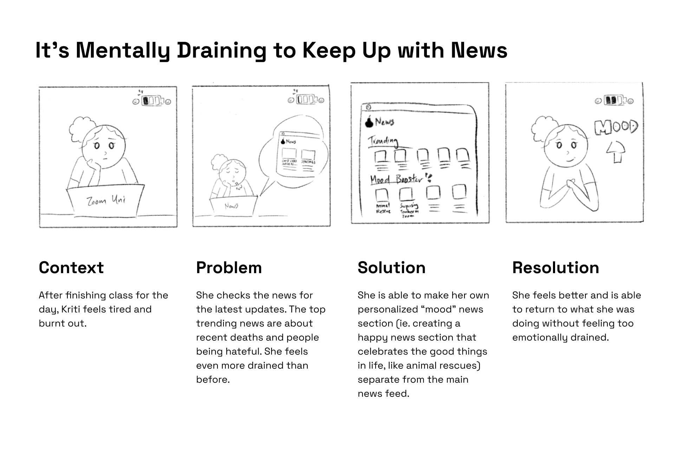
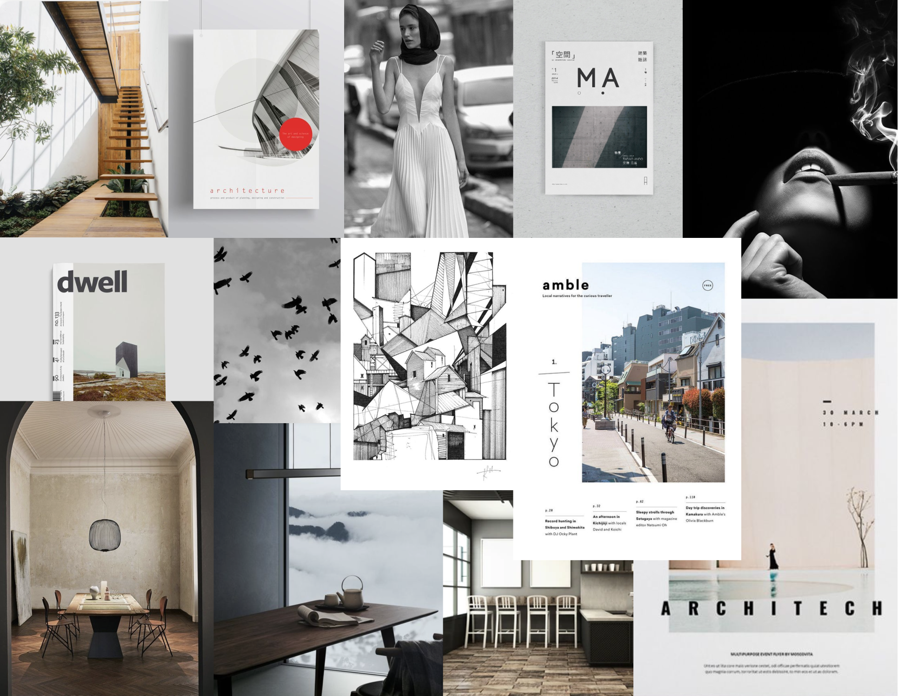

Newspace
Newspace is a news app that invites compassion, mindfulness, and empathy into the newsfeed experience. By infusing personal thoughtfulness and sincerity into the "news space", Newspace aims to help users foster healthier and positive connections and attitudes towards the news.
Role
UX/UI Design, Research & Testing, Conceptualization
Team Beef Ramen Cake
Kane Gu, Emily Zhou
Tools
Figma, Google Drive
Timeline
7 weeks (April to June 2021)
COVID-19 changed our lives
As a college student, remote classes made learning and student life more lonely and difficult. I felt tired and disconnected from reality, no longer keeping up with the news or what was happening in the world anymore. The news cycle was a constant sad and haunting reminder that we could not return to normal or have any semblance of peace in the world. My team wondered if others felt the same way.
How do people engage with and feel towards the news during COVID-19? Is there a change in news habits?
We spoke to 3 women about how they discussed and interacted with the news, discovering the following:
Key thoughts on the news
Patterns across participants
What's the main takeaway?
Our user interviews revealed that the consumption of news can be mentally draining when we are constantly confronted by negativity. Seeing negative news all the time can lead to news fatigue, where we choose to avoid the news or avoid discussing it with others because of the emotions negative news evoke - sadness, dejectedness, and disappointment at the state of the world.
How might we change people's perception towards the news and transform their news consumption habits?
Building a foundation for our vision
To craft our special newsfeed experience, we conceptualized ideas not commonly seen in other news apps, and transformed our top ideas into illustrated storyboards.
Insights from our user interview sessions revealed how ambiguous solutions, such as rating an article as a fact-checking mechanism, can cause more harm than good. Solutions like including a special Mood-booster news section and providing social justice resources were met with positive feedback and immense interest.

Balance the intake of news with a Mood section that provides positive, feel-good news and self-care resources.
Article ratings are crowdsourced by the public, but can be easily exploited if not moderated correctly.
Resources can be found without researching externally, but information needs to be verified for credibility.
Framing our purpose
Before entering our prototyping process, we established the core values of Newspace to guide our designs. We want Newspace users to feel in control of their news intake where they could do the following:
Stay Informed
Keep up with news
Feel Grounded
Care for well-being
Competitive Analysis
We compared Newspace with other news apps and found that our new key features (Fact-Checking, Mood Section, Resources) were not commonly prevalent in current news, revealing a potential niche we could fill.
Initial UX Flow
Wireframes

Evoking different visual atmospheres
Newspace has two major sections: the "Formal News" feed and the "Mood" feed. We created two distinct moodboards to help distinguish the type of content and vibe of each section.

Adjectives for "Formal News"
Sophisticated, clean, casual & modern
Adjectives for "Mood"
Calm, thoughtful, warm & inviting
Refining our designs
Several participants provided feedback on our mid-fidelity prototype to help us iterate and improve our ideas. The information architecture was the biggest change to our app, as some found the names of the core sections (ie: Home, Trending, Mood, For You) too vague and unclear. Below are some of our primary changes.
Onboarding

Home

Article

Explore

Following

Mood

Self-Care

Take Action

Disconnect

Reflection
Newspace was conceived with the intention to foster healthier and more positive connections and attitudes towards the news, as well as be an inclusive and supportive platform for our users, journalists, artists/creators, and the larger community.
If we had more time, we would have tested across a larger demographic to garner their thoughts on app like this, and dug deeper into a conversation about news consumption and the influence of social and political media in our lives.
Final Acknowledgments
Thank you to Emily and Kane for all of their hard work and thoughtful care into crafting Newspace! We had such a blast together and I am so incredibly proud of what we have accomplished, I could not have asked for a better team to do this with <3